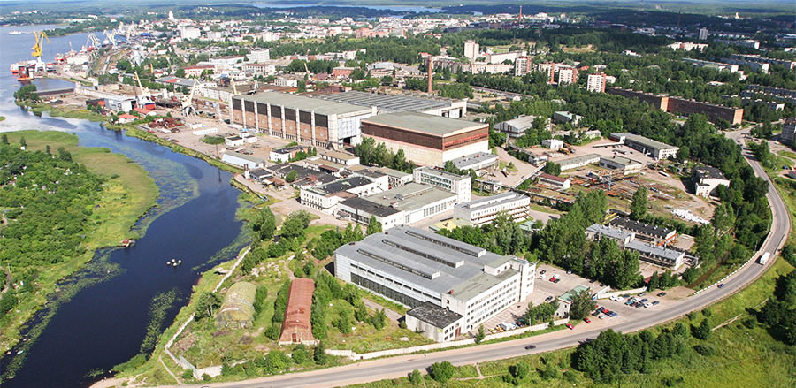
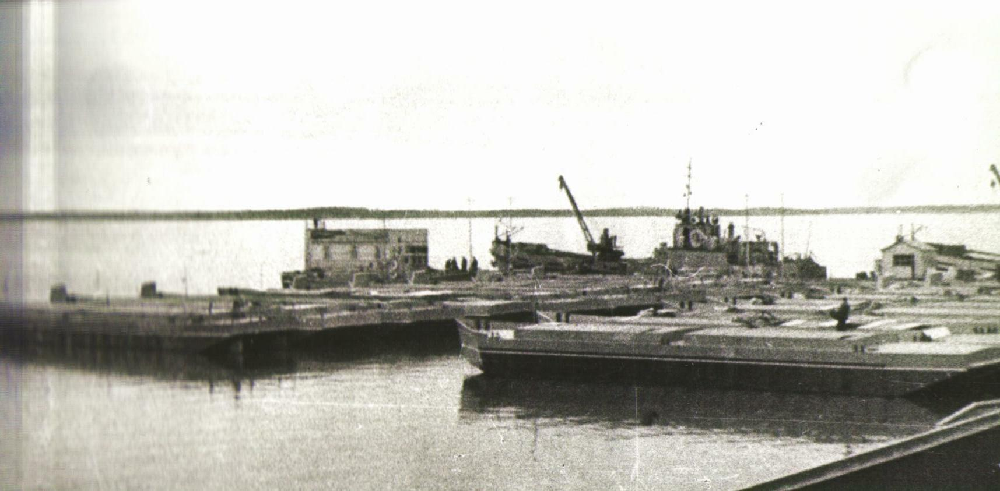

ВЫБОРГСКИЙ СУДОСТРОИТЕЛЬНЫЙ ЗАВОД
ВЫБОРГСКИЙ СУДОСТРОИТЕЛЬНЫЙ ЗАВОД Выборгский судостроительный завод

ПАО «Выборгский судостроительный завод» — одно из крупнейших судостроительных предприятий,
расположенных в Северо-Западном регионе России. Верфь была основана в 1948 году.
За 70 лет трудовой коллектив завода построил более 220 судов различного назначения,
9 морских буровых платформ и 105 модулей верхних строений платформ для разработки нефтегазовых месторождений.
Основным направлением деятельности верфи является строительство различных судов гражданского назначения:
судов ледового класса, судов снабжения, ледоколов, рыболовных траулеров,
а также буровых платформ для разработки морских шельфовых месторождений.
Специалисты предприятия имеют сертификаты ведущих мировых классификационных обществ:
Lloyd’s Register of Shipping, Germanischer Lloyd, Bureau Veritas, RINA, Российского морского регистра судоходства.
Выборгский судостроительный завод является членом Общероссийского отраслевого объединения работодателей
"Союз машиностроителей России", Межрегионального отраслевого некоммерческого Объединения промышленников
и предпринимателей (работодателей) «Ассоциация судостроителей Санкт-Петербурга и Ленинградской области».
С 2012 года ПАО «ВСЗ» входит в состав АО «Объединённая судостроительная корпорация».
История
Строительство завода и первая продукция
Выборгский судостроительный завод был основан 12 ноября 1948 г. с утверждения
«Временного положения о введенном в частичную эксплуатацию заводе 870 МСП».
Завод стал полноценным предприятием в составе Министерства судостроительной промышленности.
В 1949 году при плане сдачи первых двух несамоходных барж было сдано восемь.
Чуть позже, в 53-56 годах завод начинает осваивать более сложные заказы, в частности, самоходные баржи разных модификаций.
В сентябре 1954 г. в эллинге впервые закладывается головной десантный корабль.
С 1953 по 1956 гг. заводом было сдано 318 несамоходных и 20 самоходных барж, 3 малых десантных корабля.
Ледокольный флот

Нажмите на фото ↑
В 2012 году верфь начала строительство линейных дизельных ледоколов проекта 21900 М мощностью 18 МВт. П
ередача заказчику головного ледокола «Владивосток» состоялась в соответствии с контрактными сроками в октябре 2015 года,
второго в серии судна «Мурманск» в декабре 2015 года, третьего ледокола «Новороссийск» в декабре 2016 года.
В конце 2015 года на заводе начали строительство двух многоцелевых ледокольных судов обеспечения проекта
IBSV01 ледового класса Icebreaker 8, мощностью 22 МВт. Головное судно «Александр Санников» было спущено на воду в ноябре 2016 года,
серийное судно «Андрей Вилькицкий» спустили на воду в июле 2017 года.
После успешного прохождения ходовых испытаний оба судна были переданы заказчику ПАО «Газпромнефть Шиппинг» в 2018 году.
На данный момент суда проекта IBSV01 являются самыми мощными дизель-электрическими ледоколами в мире.
1